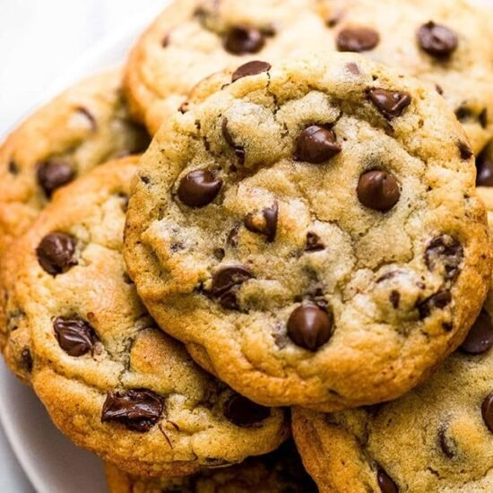

Chocolate Chip Cookies

Crispy Chocolate Chip Cookies
This recipe will walk you through the steps to create the best homemade
thin and crispy chocolate chip cookies. This recipe should take approximately
1 hour and should yield 5 dozen cookies. I hope you enjoy.
Ingredients
- 2 1/2 sticks butter, at room temp
- 1 cup dark brown sugar
- 1/2 cup white sugar
- 2 large eggs
- 2 teaspoons vanilla extract
- 2 1/2 cups all-purpose flour
- 1 teaspoon baking soda
- 2 cups semisweet chocolate chips
Steps
- Preheat the oven to 350 degrees F. Grease 2 baking sheets
-
Combine butter, brown sugar, and white sugar in a large bowl;
beat with an electric mixer until creamy. Add eggs and vanilla
extract. Beat until well incorporated. Stir in flour and baking
soda until smoothly blended. Fold in chocolate chips.
- Drop teaspoonfuls of cookie dough onto the prepared baking sheets.
-
Bake in the preheated oven until deeply browned and crisp, 12 to 15
minutes. Transfer to wire racks to cool. Repeat with remaining
cookie dough.